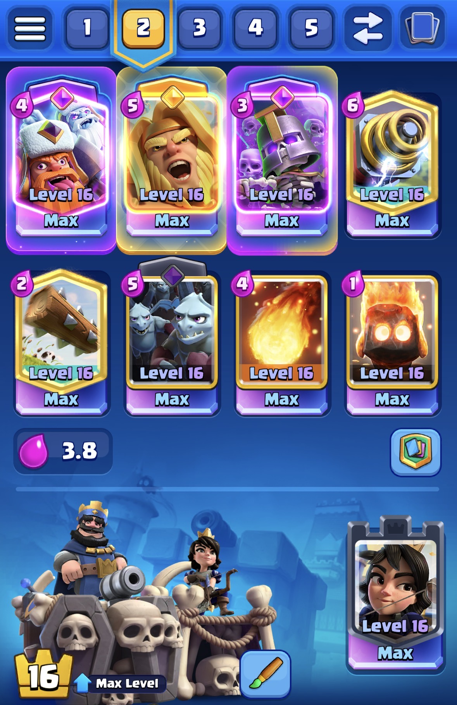

Clash Royale
I have one singular account that is completely free to play, and I have ran the same deck for the last 7 years. The strategy is to count elixir and play defense, while waiting for a good opportunity to build a big Giant + Sparky push or quickly punish with the Lumberjack/Minion Horde. It's not the best deck and has some auto-losses (classic inferno tower log bait, any E-dragon deck, etc), but it's possible to win since a lot of players running those decks have less than optimal thinking capacity.
At this point, I enjoy BMing my opponents more than I enjoy the game :)
